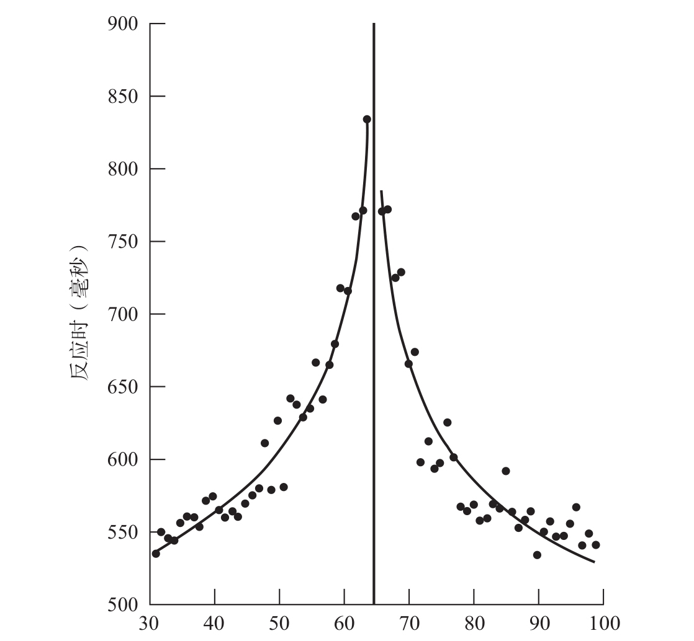

我们对数量的理解与其他动物没有差别，这一点听起来似乎不足为奇，毕竟哺乳动物都拥有基本相似的视觉和听觉系统。甚至在某些领域，如嗅觉方面，人类的感知能力远不如其他物种。有人可能会认为，涉及人类语言时，情况应该完全不同。很明显，我们与其他动物的区别在于，我们有能力运用任意符号来代表数字，比如单词或者阿拉伯数字。这些符号由离散的元素组成，人们可以以一种纯粹形式化的方式对其进行操纵，并且不存在任何模糊性。内省研究表明，我们的大脑能够以同样的敏锐度（acuity）表征1到9的含义。实际上，这些符号在我们看来没什么区别。我们对这些符号的使用得心应手，甚至可以在短暂的固定时间内对任何两个数字进行加法运算或者比较，就像电脑一样。总体来讲，数字符号的发明让我们摆脱了对数字的数量表征模糊不清的情况。
直觉误导人！尽管数字符号为我们开启了一扇通向原本无法触及的严格算术领域的大门，但是它们并没有将我们的根基与动物对数量的粗略表征分离开来。恰恰相反，每次面对阿拉伯数字，我们的脑都不得不把它看作一个表征精度随数量增加而降低的模拟量，这基本就是老鼠或是黑猩猩的做法。将符号翻译成数量，是以增加可以测量的心理运作速度为重要代价的。
对这一现象的首次报道要追溯到1967年。这一现象在当时具有革命性的意义，因此发表在《自然》杂志上绝对名副其实13。罗伯特·莫耶（Robert Moyer）与托马斯·朗多埃（Thomas Landauer）测量了成人判断两个阿拉伯数字哪个更大时所需要的精确时间。他们的实验过程是：快速闪现一对数字，如9和7，然后要求被试通过按下两个反应键中的一个来报告较大数字的位置。
这个简单的比较任务并不像看起来那么轻松，成人通常要用大于0.5秒的时间才能完成，而且结果并非全无差错。更令人吃惊的是，成人的表现会随所挑选的数字呈现系统性变化。若两个数字代表的数值差别很大，如2与9，被试的反应迅速而准确。然而，若两个数字的数值比较接近，如5与6，他们的反应会慢100毫秒以上，并且平均每10个实验轮次就会出错一次。此外，数值间距相同时，随着数值逐渐增大，被试反应会变慢。从1与2中挑选较大的数字很容易，但是比较2与3哪个更大，就会有点困难，比较8与9则会很困难。
我们需要声明的是，参与莫耶与朗多埃测试的人并没有异常，而是和你我一样的普通人。在数字比较实验进行了十多年后，我仍然没有找到任何一个不受数字距离影响且比较5和6与比较2和9一样快的人。我曾经对一群年轻有为的科学家进行过测试，其中包括法国最好的两所数学学院——巴黎高等师范学校和巴黎综合理工学院的学生。让所有人觉得神奇的是，他们在试图判断8与9哪个更大时居然会慢下来，甚至还可能出错。
系统的训练也不能改变这种情况。在一项实验中，我试图训练一群美国俄勒冈大学的学生，使他们免受距离效应的制约。我尽可能地简化任务，在电脑屏幕上只呈现数字1、4、6和9。如果看到的数字大于5，学生们必须按右手边的键，小于5则按左手边的键。很难想象还会有更简单的任务：看到1或4就按左键，看到6或9就按右键。然而经过几天共1 600个轮次的训练后，与离5较远的数字1和9相比，被试在看到离5较近的数字4和6时，反应仍然较慢，准确率仍然较低。事实上，在训练过程中，尽管反应时整体上是变短了，但是，被试在看到离5较近的数字与离5较远的数字时，反应时仍有差别，距离效应本身并没有受到训练的任何影响。
我们该如何理解这些数字比较的结果？显然，我们的大脑不会保留一份关于所有可能的数字比较的清单。如果我们靠死记硬背掌握所有的可能性，如1小于2、7大于5等，那么比较时间就不会随数字距离的改变而发生变化。这种距离效应究竟源自哪里？就外形而言，数字4和5的区别跟数字1和5的区别没什么不同。因此，判断数字4是小于还是大于5的困难，与分辨数字外形的难度毫无关系。显而易见，人脑并未在识别出数字的外形后就停止工作。它迅速在数量含义的层面上识别数字，数字4确实比1更靠近5。我们大脑的沟回之中隐藏着一种包含阿拉伯数字之间近似关系的数量信息模拟表征。我们一看到数字，就可以提取它的数量表征，但是这种表征较容易将相邻的数字混淆。
当我们比较两位数时，会出现另一种更为惊人的现象14。假设你要比较71和65的大小，一个合理的方法是，先检查它们最左边的数字，当你发现7大于6时，根本无须考虑最右边的数字是什么，就可以得出71大于65的结论。这一算法被应用于计算机的数字比较中。但是人脑并不是这样运行的。将65与其他两位数进行比较，并测量所需的时间，你会得到一条光滑的曲线（见图3-4）。随着数字逐渐靠近65，比较时间会持续上升。个位和十位数同时对这一趋势产生影响。因此，判断71大于65所用的时间要比判断79大于65所用的时间更长，尽管两种情况下左边的数字都是7。与此同时，当十位数不同时，反应时也不会不成比例地突然变化——比较71和65只比比较69和65快了一点，如果我们选择性地先注意左边的数字，比较69和65应该更加困难。

实验中35名成年志愿者将31和99之间的所有两位数与65进行了大小比较，他们的反应时以毫秒级的精确度被记录下来。每一个黑点代表一个给定数字的平均反应时。数字越接近65，反应越慢，这就是距离效应。
图3-4 比较两个数字需要多久？
资料来源：Dehaene, Dupoux, & Mehler, 1990。
我能想到的唯一解释就是，我们的大脑将两位数字作为整体来加工，并把它转化成一个内部数量或大小。在这一阶段，我们的大脑会忽略与这一数量相对应的精确数值。比较运算仅涉及数量，涉及用于传递数量信息的符号。